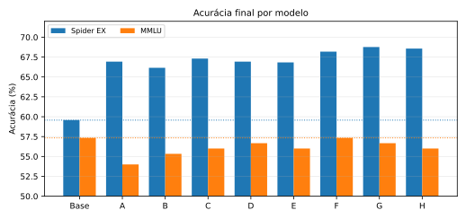
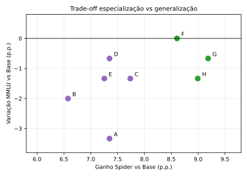
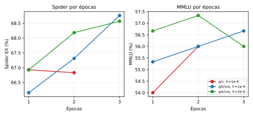
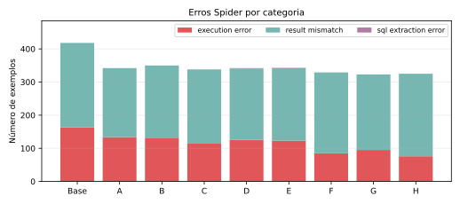

1. Introdução
O objetivo do TP é medir empiricamente o trade-off entre especialização e generalização em um LLM. A especialização foi medida por Text-to-SQL no Spider: dado um esquema de banco, uma pergunta em linguagem natural e exemplos few-shot, o modelo deve gerar uma consulta SQL executável. A generalização foi medida por uma suíte fixa de 150 questões MMLU, com 50 questões de STEM, 50 de Humanidades e 50 de Ciências Sociais.
A pergunta central é se o ganho em Text-to-SQL compensa uma possível perda em tarefas gerais. Para isso, o mesmo pipeline de avaliação foi aplicado ao modelo base e a todos os modelos fine-tuned. A conclusão é limitada ao modelo, aos dados, aos prompts, à seed e aos hiperparâmetros usados neste experimento.
2. Metodologia
2.1 Modelo, dados e ambiente
O modelo base foi Qwen/Qwen2.5-3B-Instruct. A execução final ocorreu em Google Colab com GPU NVIDIA A100-SXM4-40GB, Python 3.12.13, PyTorch 2.11.0+cu128, Transformers 4.57.6, PEFT 0.19.1, TRL 0.29.1, Datasets 4.8.5, DeepEval 3.9.9 e bitsandbytes 0.49.2. A seed global foi 42.
O Spider train foi usado apenas para fine-tuning e exemplos few-shot. O Spider dev completo, com 1034 exemplos, foi usado somente para avaliação final. A suíte MMLU contém exatamente 150 questões amostradas de forma determinística de cais/mmlu: college_computer_science, philosophy e econometrics, com 50 questões por categoria. O hash da suíte analisada foi 8fc4621b....
2.2 Prompt e avaliação
No Spider, o prompt de avaliação inclui instrução, esquema do banco-alvo, três exemplos few-shot retirados do Spider train e a pergunta final. O mesmo template foi aplicado ao baseline e a todos os adapters. A geração de avaliação foi determinística: greedy, temperature=0, do_sample=false. No MMLU, o prompt é 5-shot fixo por subcategoria e exige uma única alternativa A, B, C ou D.
2.3 Métrica Execution Accuracy
A métrica customizada ExecutionAccuracy herda de deepeval.metrics.BaseMetric. A saída bruta do modelo passa por extração robusta de SQL: remoção de markdown, localização do primeiro SELECT ou WITH, corte em ponto e vírgula ou marcadores de continuação como Explanation, Schema: e Question:. Consultas não seguras são bloqueadas.
A SQL prevista e a SQL gold são executadas em SQLite em modo read-only, com PRAGMA query_only, timeout e normalização de células. A comparação é insensível à ordem das linhas, exceto quando a consulta contém ORDER BY. A métrica retorna 1,0 se os resultados executados forem equivalentes e 0,0 em erro de sintaxe, erro de execução ou resultado diferente.
2.4 Fine-tuning
O treinamento usou LoRA em BF16, sem quantização, porque a A100 permitiu executar o modelo de 3B com folga após ajuste do microbatch. O dataset de treino foi formatado como prompt + completion, com loss apenas na completion e EOS <|im_end|>, evitando treinar o modelo para copiar o enunciado inteiro. Todas as configurações usaram batch efetivo 16, max_seq_length=2048, adamw_torch_fused, warmup_ratio=0.03, weight_decay=0, TF32 habilitado e group_by_length=true.
| Exp. | Target modules | LR | Épocas | Batch efetivo | r/alpha/dropout | Train loss | Runtime | Papel na análise |
|---|---|---|---|---|---|---|---|---|
| A | q_proj,v_proj | 1e-4 | 1 | 16 | 16/32/0,05 | 0,309 | 11,0 min | LoRA leve, referência conservadora. |
| B | q,k,v,o | 1e-4 | 1 | 16 | 16/32/0,05 | 0,260 | 14,0 min | Isola mais módulos com 1 época. |
| C | q,k,v,o | 1e-4 | 2 | 16 | 16/32/0,05 | 0,199 | 28,2 min | Mede segunda época em LR baixo. |
| D | q,k,v,o | 2e-4 | 1 | 16 | 16/32/0,05 | 0,226 | 14,2 min | LR maior com 1 época. |
| E | q_proj,v_proj | 1e-4 | 2 | 16 | 16/32/0,05 | 0,240 | 21,6 min | Segunda época para LoRA leve. |
| F | q,k,v,o | 2e-4 | 2 | 16 | 16/32/0,05 | 0,168 | 27,6 min | Melhor compromisso final. |
| G | q,k,v,o | 1e-4 | 3 | 16 | 16/32/0,05 | 0,164 | 41,3 min | Melhor Spider. |
| H | q,k,v,o | 2e-4 | 3 | 16 | 16/32/0,05 | 0,135 | 41,7 min | LR maior por 3 épocas. |
3. Resultados
A Tabela 2 resume o resultado final. Todos os fine-tuned melhoraram Spider em relação ao modelo base. O ganho absoluto variou de +6,58 a +9,19 pontos percentuais. No MMLU, as variações foram pequenas: de -3,33 p.p. no Exp A até 0,00 p.p. no Exp F.
| Modelo | Spider EX | Corretas | Delta Spider | MMLU | Corretas | Delta MMLU | Variação relativa MMLU |
|---|---|---|---|---|---|---|---|
| Base | 59,57% | 616/1034 | 0,00 p.p. | 57,33% | 86/150 | 0,00 p.p. | 0,00% |
| Exp A | 66,92% | 692/1034 | +7,35 p.p. | 54,00% | 81/150 | -3,33 p.p. | -5,81% |
| Exp B | 66,15% | 684/1034 | +6,58 p.p. | 55,33% | 83/150 | -2,00 p.p. | -3,49% |
| Exp C | 67,31% | 696/1034 | +7,74 p.p. | 56,00% | 84/150 | -1,33 p.p. | -2,33% |
| Exp D | 66,92% | 692/1034 | +7,35 p.p. | 56,67% | 85/150 | -0,67 p.p. | -1,16% |
| Exp E | 66,83% | 691/1034 | +7,25 p.p. | 56,00% | 84/150 | -1,33 p.p. | -2,33% |
| Exp F | 68,18% | 705/1034 | +8,61 p.p. | 57,33% | 86/150 | 0,00 p.p. | 0,00% |
| Exp G | 68,76% | 711/1034 | +9,19 p.p. | 56,67% | 85/150 | -0,67 p.p. | -1,16% |
| Exp H | 68,57% | 709/1034 | +8,99 p.p. | 56,00% | 84/150 | -1,33 p.p. | -2,33% |

3.1 Ganho em Spider
O ganho contra a base é robusto. Em comparação pareada por exemplo, o Exp G corrige 157 casos que a base erra e erra 62 casos que a base acerta, saldo líquido de +95 exemplos. O Exp F tem saldo +89 e o Exp H saldo +93. Em teste binomial pareado sobre discordâncias, todos os LoRAs têm diferença contra a base com p-valor menor que 1e-5. Esses testes não substituem a análise experimental, mas mostram que o ganho não é explicado por poucas trocas isoladas.
3.2 Regressão em MMLU
O MMLU foi mais estável. O Exp F manteve 86/150, igual à base, embora com trocas internas: ganhou questões em Humanidades e perdeu algumas em STEM e Sociais. O Exp G perdeu apenas uma questão no total. Como a suíte tem 150 questões, uma questão equivale a 0,67 p.p.; portanto, diferenças de 1 a 3 questões entre configs devem ser interpretadas como evidência fraca, não como ranking fino de capacidade geral.
Uma análise da própria suíte reforça essa cautela: entre base e oito fine-tuned, 74 questões foram acertadas por todos os modelos e 58 foram erradas por todos. Apenas 18 questões diferenciaram os modelos. Assim, o MMLU 150 atende à especificação do TP e funciona como sanity check de regressão, mas não como uma estimativa completa do MMLU global.

4. Comparação de hiperparâmetros
A comparação crítica precisa distinguir três níveis: todos os fine-tuned vencem a base; Exp F/G/H formam o grupo mais forte em Spider; e as diferenças internas entre configs são pequenas. A Tabela 3 mostra comparações pareadas relevantes. O sinal positivo favorece o segundo experimento da comparação.
| Comparação | Pergunta | Saldo pareado | Leitura |
|---|---|---|---|
| A vs B | q/v contra q/k/v/o, 1 época, LR 1e-4 | -8 para B | A ficou ligeiramente acima, mas sem evidência forte. |
| E vs C | q/v contra q/k/v/o, 2 épocas, LR 1e-4 | +5 para C | Mais módulos ajudam um pouco em 2 épocas, ainda frágil. |
| B vs C | 1 para 2 épocas, q/k/v/o, LR 1e-4 | +12 para C | A segunda época melhorou Spider. |
| C vs G | 2 para 3 épocas, q/k/v/o, LR 1e-4 | +15 para G | A terceira época elevou Spider e custou 1 questão MMLU. |
| D vs F | 1 para 2 épocas, q/k/v/o, LR 2e-4 | +13 para F | O melhor compromisso veio de 2 épocas com LR maior. |
| F vs H | 2 para 3 épocas, q/k/v/o, LR 2e-4 | +4 para H | Ganho Spider mínimo, com queda MMLU de 2 questões. |
| C vs F | LR 1e-4 contra 2e-4, 2 épocas | +9 para F | LR maior foi melhor no ponto de 2 épocas. |
| G vs H | LR 1e-4 contra 2e-4, 3 épocas | -2 para H | Em 3 épocas, LR 1e-4 foi ligeiramente superior. |

q/k/v/o, mais épocas melhoraram Spider. Em LR 2e-4, a terceira época quase não aumentou Spider e reduziu MMLU. Em LR 1e-4, a terceira época produziu o melhor Spider.O alvo dos módulos não produziu uma conclusão simples. Com 1 época e LR 1e-4, adaptar apenas q/v foi melhor em Spider que adaptar q/k/v/o, mas pior em MMLU. Com 2 épocas e LR 1e-4, q/k/v/o superou levemente q/v em Spider e empatou em MMLU. Portanto, não é correto afirmar que mais módulos sempre melhoram; o efeito depende de época e LR.
O fator mais consistente foi a duração do treino em q/k/v/o. De B para C para G, Spider subiu 66,15%, 67,31% e 68,76%. De D para F para H, subiu 66,92%, 68,18% e 68,57%. Ao mesmo tempo, o MMLU não caiu de forma monotônica: F igualou a base, H perdeu duas questões e G perdeu uma. A melhor narrativa é que, nestas condições, duas ou três épocas especializam melhor o modelo sem evidência de esquecimento catastrófico forte.
5. Análise de erros
A análise de erros foi feita principalmente no Exp G, por ser o melhor Spider. A Figura 4 mostra que o fine-tuning reduziu o total de erros e, especialmente, erros de execução. A base teve 163 execution_error; o Exp G teve 95 e o Exp H 76. O principal resíduo passou a ser result_mismatch, isto é, SQL executável mas semanticamente diferente da gold.
Há um padrão adicional importante: conforme o treinamento fica mais forte, parte dos erros deixa de ser falha de execução e passa a ser falha de resultado. Na base, 39,0% dos erros eram execution_error. Nos experimentos F, G e H, essa proporção caiu para 25,8%, 29,4% e 23,4%, respectivamente. Ao mesmo tempo, a fração de result_mismatch subiu para 74,2%, 70,6% e 76,6%. A leitura é que os adapters mais treinados aprendem melhor o formato SQL e nomes do schema, mas ainda erram a composição semântica exata da consulta.

5.1 Exemplos qualitativos
Coluna agregada em ordem diferente. Para "How many singers are from each country?", a gold era SELECT country, count(*) FROM singer GROUP BY country, enquanto o Exp G gerou SELECT count(*), country FROM singer GROUP BY country. A consulta captura a mesma agregação, mas troca a ordem das colunas, e a métrica por execução compara as tuplas resultantes.
Interpretação incorreta de atributo. Para "What is the maximum capacity and the average of all stadiums?", a gold seleciona max(capacity), average. O modelo gerou max(capacity), avg(average). Aqui há execução válida, mas uma decisão semântica diferente: o campo average é tratado como valor a agregar, não como coluna a retornar.
Schema linking imperfeito. Em exemplos do banco pets_1, o modelo usou pet_type, mas a coluna correta no schema é pettype. Esse tipo de erro indica que o fine-tuning melhora o formato SQL, mas ainda falha em detalhes de ligação entre linguagem natural e nomes exatos do banco.
6. Discussão
6.1 O ganho justifica a perda geral?
Sim, nas configurações F e G. O Exp F aumentou Spider de 59,57% para 68,18%, ganho de +8,61 p.p., sem queda agregada no MMLU 150. O Exp G aumentou Spider para 68,76%, ganho de +9,19 p.p., perdendo apenas uma questão MMLU. Para a finalidade do TP, isso caracteriza especialização útil com regressão geral pequena. Para uso prático, o Exp F seria a escolha conservadora; o Exp G seria escolhido se a prioridade absoluta fosse Text-to-SQL.
6.2 Fatores que influenciaram o trade-off
O número de épocas e o learning rate tiveram efeito mais visível que a troca isolada de target modules. Aumentar de 1 para 2 épocas em q/k/v/o melhorou Spider tanto em LR 1e-4 quanto em LR 2e-4. A terceira época continuou ajudando em LR 1e-4, mas trouxe retorno marginal em LR 2e-4. O LR 2e-4 foi especialmente forte em 2 épocas, produzindo o Exp F. Já a comparação q/v contra q/k/v/o foi ambígua e não sustenta uma afirmação universal.
A loss de treino caiu com configurações mais longas, mas menor loss não implicou automaticamente melhor generalização. O Exp H teve menor loss, 0,135, mas não foi o melhor em Spider nem em MMLU. Isso é coerente com a hipótese de que, após certo ponto, o treino adicional especializa o formato sem necessariamente melhorar execução no dev.
A composição dos erros reforça essa interpretação. As configurações mais fortes em q/k/v/o, especialmente com LR 2e-4 e duas ou três épocas, reduziram erros como coluna inexistente e tabela inexistente. Porém, os erros restantes passaram a ser majoritariamente result_mismatch. Isso indica que o treinamento melhorou a aderência ao schema antes de resolver completamente planejamento relacional, escolha de joins, agregações e filtros.
6.3 Possível contaminação dos benchmarks
Como Spider e MMLU são benchmarks públicos, não é possível provar, apenas pelos artefatos deste trabalho, que o modelo base nunca viu exemplos semelhantes durante pré-treino ou instrução. Ainda assim, os dados obtidos não mostram um sinal forte de contaminação específica do nosso pipeline. O Spider dev não foi usado no treinamento, os exemplos few-shot vieram do Spider train, e a mesma avaliação foi aplicada à base e aos adapters. Além disso, os fine-tuned alteraram substancialmente o comportamento da base e produziram ganhos pareados, o que sugere aprendizado adicional do Spider train, não apenas reprodução estática de respostas já conhecidas.
No MMLU, o padrão também não aponta para memorização seletiva causada pelo fine-tuning: 74 questões foram acertadas por todos os modelos e 58 erradas por todos, restando apenas 18 questões discriminativas. Esse comportamento é compatível com uma suíte pequena e com diferenças marginais entre modelos, não com evidência clara de que o adapter tenha memorizado a avaliação. A conclusão conservadora é que não há evidência experimental de contaminação dentro do pipeline executado; a possibilidade de exposição prévia do modelo base a benchmarks públicos permanece uma incerteza externa e deve limitar interpretações absolutas das acurácias.
6.4 Implicações práticas
Para LLMs comerciais especializados, os resultados sugerem que PEFT pode entregar ganhos relevantes em domínio com custo moderado e sem apagar capacidades gerais de forma evidente. Contudo, a decisão de produção não deve usar apenas média agregada. É necessário monitorar regressões por categoria, erros de segurança, SQLs inválidas, drift de formato e robustez em schemas não vistos. A escolha entre F e G ilustra uma decisão real: maximizar a tarefa-alvo ou escolher um ponto mais estável no trade-off.
7. Reprodutibilidade e limitações
A reprodutibilidade foi controlada por seeds fixas, configs YAML, suíte MMLU persistida, geração determinística e salvamento de métricas, predições, logs e ambiente. O README documenta os comandos para preparar dados, treinar adapters e executar benchmarks. Os resultados deste relatório foram obtidos diretamente dos artefatos em outputs/.
A principal limitação é o escopo da avaliação de generalização. A suíte MMLU tem 150 questões e três subcategorias, como exigido no TP. Portanto, a baixa degradação observada no MMLU deve ser interpretada apenas para esse cenário específico, não como garantia ampla de preservação de capacidade geral. Além disso, as configurações de treino foram deliberadamente conservadoras: LoRA de rank 16, poucos módulos de atenção, batch efetivo fixo e no máximo três épocas. Configurações mais agressivas, mais longas ou com mais módulos poderiam produzir trade-offs diferentes.
8. Conclusão
O pipeline cumpriu o objetivo do TP: avaliar um baseline, treinar múltiplas configurações LoRA no Spider train, avaliar todos os modelos no Spider dev e no MMLU 150, calcular ganhos e registrar artefatos reprodutíveis. O resultado principal é que LoRA especializou o modelo para Text-to-SQL de forma consistente. O melhor Spider foi o Exp G, com 68,76% de Execution Accuracy, +9,19 p.p. contra a base. O melhor compromisso foi o Exp F, com 68,18% em Spider e 57,33% em MMLU, igual ao baseline.
A hipótese de regressão de capacidade não foi fortemente confirmada. Houve pequenas perdas em algumas configurações, mas o MMLU variou em poucos exemplos. A conclusão mais imparcial é que, sob estas condições, o fine-tuning LoRA trouxe ganho claro na tarefa-alvo e apenas regressão fraca ou nula na medida geral usada.
Referências
[1] T. Yu et al. Spider: A Large-Scale Human-Labeled Dataset for Complex and Cross-Domain Semantic Parsing and Text-to-SQL Task.
[2] D. Hendrycks et al. Measuring Massive Multitask Language Understanding.
[3] E. Hu et al. LoRA: Low-Rank Adaptation of Large Language Models.
[4] Qwen Team. Qwen2.5 model family and model card for Qwen/Qwen2.5-3B-Instruct.
[5] Hugging Face. TRL, Transformers, PEFT and Datasets documentation.
[6] Confident AI. DeepEval documentation for custom metrics.